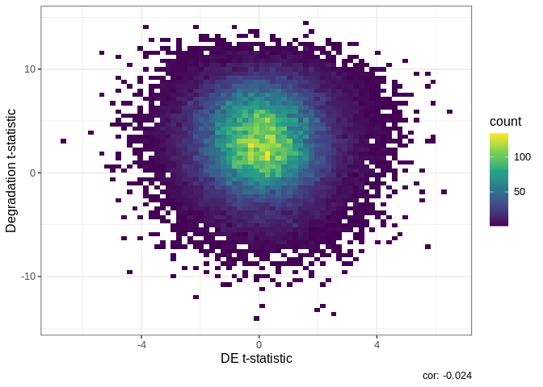
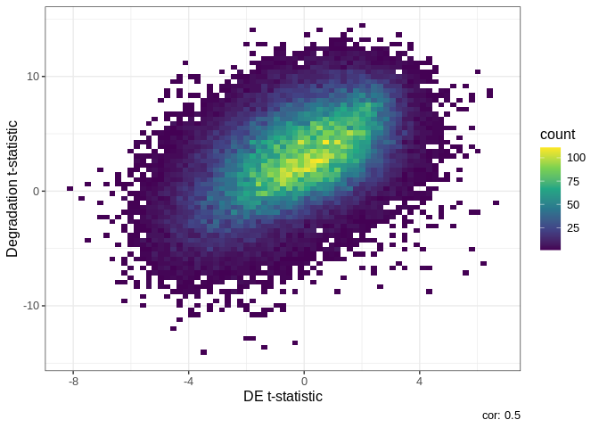

Differential expressions analysis requires the ability normalize
complex datasets. In the case of postmortem brain tissue we are tasked
with removing the effects of bench degradation. The qsvaR package
combines an established method for removing the effects of degradation
from RNA-seq data with easy to use functions. The first step in this
workflow is to create an Ranged Summarized Experiment[https://www.rdocumentation.org/packages/SummarizedExperiment/versions/1.2.3/topics/RangedSummarizedExperiment-class]
object with the transcripts identified in our qsva experiment. If you
already have a Ranged Summarized Experiment[https://www.rdocumentation.org/packages/SummarizedExperiment/versions/1.2.3/topics/RangedSummarizedExperiment-class]
of transcripts we can do this with the getDegTx function as shown
below.If not this can be generated with the SPEAQeasy (a
RNA-seq pipeline maintained by our lab) pipeline usinge the
--qsva flag. If you already have a
Ranged Summarized Experiment[https://www.rdocumentation.org/packages/SummarizedExperiment/versions/1.2.3/topics/RangedSummarizedExperiment-class]
object with transcripts then you do not need to run
SPEAQeasy. This flag requires a full path to a text file,
containing one Ensembl transcript ID per line for each transcript
desired in the final transcripts R output object (called
rse_tx). The sig_transcripts argument in this
package should contain the same Ensembl transcript IDs as the text file
for the --qsva flag.The goal of qsvaR is to
provide software that can remove the effects of bench degradation from
RNA-seq data.
Get the latest stable R release from CRAN. Then install
qsvaR using from Bioconductor the following code:
if (!requireNamespace("BiocManager", quietly = TRUE)) {
install.packages("BiocManager")
}
BiocManager::install("qsvaR")And the development version from GitHub with:
# install.packages("devtools")
devtools::install_github("LieberInstitute/qsvaR")This is a basic example which shows you how to obtain the quality
surrogate variables (qSVs) for the brainseq
phase II dataset[http://eqtl.brainseq.org/phase2]. qSVs are essentially
pricipal components from an rna-seq experiment designed to model bench
degradation. For more on principal components you can read and
introductory article here[https://towardsdatascience.com/tidying-up-with-pca-an-introduction-to-principal-components-analysis-f876599af383].
At the start of this script we will have a
Ranged SummmarizedExperiment[https://www.rdocumentation.org/packages/SummarizedExperiment/versions/1.2.3/topics/RangedSummarizedExperiment-class]
and a list of all the transcripts found in our degradation study. At the
end we will have a table with differential expression results that is
adjusted for qSVs.
library("qsvaR")
## We'll download example data from the BrainSeq Phase II project
## described at http://eqtl.brainseq.org/phase2/.
##
## We'll use BiocFileCache to cache these files so you don't have to download
## them again for other examples.
bfc <- BiocFileCache::BiocFileCache()
rse_file <- BiocFileCache::bfcrpath("https://s3.us-east-2.amazonaws.com/libd-brainseq2/rse_tx_unfiltered.Rdata", x = bfc)
## Now that we have the data in our computer, we can load it.
load(rse_file, verbose = TRUE)
#> Loading objects:
#> rse_tx
## Next we get the degraded transcripts for qSVA
DegTx <- getDegTx(rse_tx)
## Now we can compute the Principal Components (PCs) of the degraded transcripts
pcTx <- getPCs(DegTx, "tpm")
## Using a simple statistical model we determine the number of PCs needed (k)
mod <- model.matrix(~ Dx + Age + Sex + Race + Region,
data = colData(rse_tx)
)
k <- k_qsvs(DegTx, mod, "tpm")
print(k)
#> [1] 34Now that we have our PCs and the number we need we can generate our qSVs.
This can be done in one step with our wrapper function
qSVA which just combinds all the previous mentioned
functions.
Next we can use a standard limma package approach to do
differential expression on the data. The key here is that we add our
qSVs to the statisical model we use through model.matrix().
Here we input our Ranged SummarizedExperiment object and
our model.matrix with qSVs. The expected output is a sigTx
object that shows the results of differential expression.
library("limma")
## Add the qSVs to our statistical model
mod_qSVA <- cbind(
mod,
qsvs
)
## Extract the transcript expression values and put them in the
## log2(TPM + 1) scale
txExprs <- log2(assays(rse_tx)$tpm + 1)
## Run the standard linear model for differential expression
fitTx <- lmFit(txExprs, mod_qSVA)
eBTx <- eBayes(fitTx)
#> Warning: Zero sample variances detected, have been offset away from zero
## Extract the differential expression results
sigTx <- topTable(eBTx,
coef = 2,
p.value = 1, number = nrow(rse_tx)
)
head(sigTx)
#> logFC AveExpr t P.Value adj.P.Val
#> ENST00000553142.5 -0.06547988 2.0390889 -5.999145 2.921045e-09 0.0005786386
#> ENST00000552074.5 -0.12911383 2.4347985 -5.370828 1.009549e-07 0.0099992338
#> ENST00000510632.1 0.08994392 0.9073516 4.920042 1.037016e-06 0.0473143146
#> ENST00000530589.1 -0.10297938 2.4271711 -4.918806 1.043399e-06 0.0473143146
#> ENST00000572236.1 -0.05358333 0.6254025 -4.819980 1.697403e-06 0.0473143146
#> ENST00000450454.6 0.08446871 1.0042440 4.816539 1.726143e-06 0.0473143146
#> B
#> ENST00000553142.5 10.200286
#> ENST00000552074.5 6.767821
#> ENST00000510632.1 4.524039
#> ENST00000530589.1 4.518145
#> ENST00000572236.1 4.051142
#> ENST00000450454.6 4.035041Finally, you can compare the resulting t-statistics from your
differential expression model against the degradation time t-statistics
adjusting for the six different brain regions. This type of plot is
called DEqual plot and was shown in the initial qSVA
framework paper (Jaffe
et al, PNAS, 2017). We are really looking for two patterns
exemplified here in figure 1. A direct positive correlation with
degradation shown in figure 1 on the right tells us that there is signal
in the data associated with qSVs. An example of nonconfounded data or
data that has been modeled can be seen in figure 1 on the right with its
lack of relationship between the x and y variables.
figure
DEqual(sigTx)
For comparison, here is the DEqual() plot for the model
without qSVs.
DEqual(topTable(eBayes(lmFit(txExprs, mod)), coef = 2, p.value = 1, number = nrow(rse_tx)))
#> Warning: Zero sample variances detected, have been offset away from zero